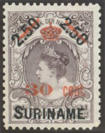
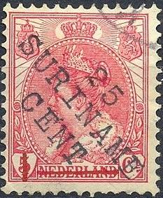
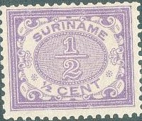
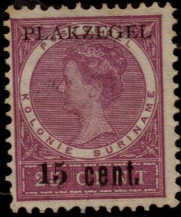
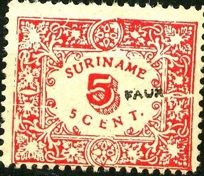
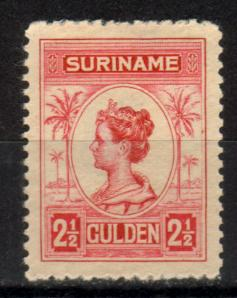
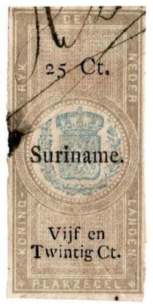

Return To Catalogue - Surinam 1873-1899 - Netherlands - Postage due stamps (TE BETALEN PORT)
Note: on my website many of the
pictures can not be seen! They are of course present in the
catalogue;
contact me if you want to purchase it.
50 c on 50 c green and brown 1 G on 1 G green 2.50 G on 2.50 G lilac Surcharged with new value

30 c (red) on 2.50 G on 2.50 G lilac (1911)
Value of the stamps |
|||
vc = very common c = common * = not so common ** = uncommon |
*** = very uncommon R = rare RR = very rare RRR = extremely rare |
||
| Value | Unused | Used | Remarks |
| 50 c | *** | *** | |
| 1 G | *** | *** | |
| 2.50 G | R | *** | |
| 30 c on 2.50 G | RR | RR | |
The forger Fournier is known to have made forged '1.00 1.00 SURINAME' overprints. If anybody has more information, please contact me.

The forged '1.00 1.00 SURINAME' overprint as used by Fournier.
Picture taken from a 'Fournier Album of Philatelic Forgeries'.

Bogus issue; "25 SURINAME CENT" on 5 c.
With lined background behind number

1/2 c lilac 1 c green 2 c brown 2 1/2 c green 3 c orange 5 c red 7 1/2 c grey
Value of the stamps |
|||
vc = very common c = common * = not so common ** = uncommon |
*** = very uncommon R = rare RR = very rare RRR = extremely rare |
||
| Value | Unused | Used | Remarks |
| 1/2 c | * | * | |
| 1 c | ** | * | |
| 2 c | *** | *** | |
| 2 1/2 c | * | * | |
| 3 c | ** | ** | |
| 5 c | ** | c | |
| 7 1/2 c | *** | *** | |
With white background behind number (1913)

1/2 c lilac 1 c green 1 1/2 c blue (1922) 2 c brown 2 1/2 c green 3 c yellow 3 c green (1926) 3 c brown (1931) 4 c blue (1926) 5 c red 5 c green (1922) 5 c lilac (1926) 6 c yellow 6 c orange (1931) 7 1/2 c grey 7 1/2 c yellow (1931) 7 1/2 c orange (1928) 10 c lilac (1922) 10 c red (1926)
Value of the stamps |
|||
vc = very common c = common * = not so common ** = uncommon |
*** = very uncommon R = rare RR = very rare RRR = extremely rare |
||
| Value | Unused | Used | Remarks |
| 1/2 c | c | c | |
| 1 c | c | c | |
| 1 1/2 c | c | c | |
| 2 c | c | c | |
| 2 1/2 c | c | c | |
| 3 c yellow | * | * | |
| 3 c green | c | c | |
| 4 c | c | c | |
| 5 c red | * | * | |
| 5 c green | * | * | |
| 5 c lilac | * | * | |
| 7 1/2 c | * | * | |
| 10 c lilac | ** | ** | |
| 10 c red | * | * | |
Surcharged
'* 3 *' on 5 c green (1925) '6' on 7 1/2 c orange (1930)
Value of the stamps |
|||
vc = very common c = common * = not so common ** = uncommon |
*** = very uncommon R = rare RR = very rare RRR = extremely rare |
||
| Value | Unused | Used | Remarks |
| 3 c on 5 c | * | * | |
| 6 c on 7 1/2 c | * | * | |
10 c grey 12 1/2 c blue 15 c brown 20 c green 22 1/2 c brown and green 25 c violet 30 c brown 50 c red Larger size

1 G lilac 2 1/2 G blue
Value of the stamps |
|||
vc = very common c = common * = not so common ** = uncommon |
*** = very uncommon R = rare RR = very rare RRR = extremely rare |
||
| Value | Unused | Used | Remarks |
| 10 c | *** | * | |
| 12 1/2 c | *** | * | |
| 15 c | R | *** | |
| 20 c | R | ** | |
| 22 1/2 c | R | *** | |
| 25 c | R | * | |
| 30 c | R | *** | |
| 50 c | RR | *** | |
| 1 G | RR | *** | |
| 2 1/2 G | RR | RR | |
Similar stamps were issued for Curacao (Netherlands Antilles) and Netherlands Indies.
Fiscal stamp; 25 c postage stamp with overprint 'PLAKZEGEL' and surcharged '15 cent.':

Fiscal stamp
(Reduced size)
5 c red
Value of the stamps |
|||
vc = very common c = common * = not so common ** = uncommon |
*** = very uncommon R = rare RR = very rare RRR = extremely rare |
||
| Value | Unused | Used | Remarks |
| 5 c | ** | ** | Tete-beche: *** |
I've seen this stamp tete-beche. I know that forgeries exist of this stamp (see for example Bill Claghorn's forgery site). The design is not as 'sharp' as the original stamps. The perforation should be 11 1/2 x 10 1/2, but the forgeries have perforation 12 1/2.

A forgery of this stamp with "FAUX" overprint.
1/2 c violet 2 1/2 c green 5 c red 12 1/2 c blue
Value of the stamps |
|||
vc = very common c = common * = not so common ** = uncommon |
*** = very uncommon R = rare RR = very rare RRR = extremely rare |
||
| Value | Unused | Used | Remarks |
| 1/2 c | * | * | |
| 2 1/2 c | * | * | |
| 5 c | ** | ** | |
| 12 1/2 c | *** | *** | |
I've seen postal stationary in this design in the value 2 1/2 c green "BRIEFKAART" and 5 c red "BRIEFKAART uit de kolonie SURINAME".
10 c red 12 1/2 c blue 12 1/2 c red (1922) 15 c olive 15 c blue (1926) 20 c green 20 c blue (1922) 20 c olive (1926) 22 1/2 c orange 25 c lilac 30 c black 32 1/2 c violet (value in red, 1922) 35 c grey (value in red, 1926) Surcharged

'10 CENT' on 12 1/2 c red (1925) '12 1/2 Ct.' (local violet surcharge) on 22 1/2 c orange (1926) '15 CENT' (red) on 12 1/2 c blue (1925) '15 CENT' on 20 c blue (1925)
Value of the stamps |
|||
vc = very common c = common * = not so common ** = uncommon |
*** = very uncommon R = rare RR = very rare RRR = extremely rare |
||
| Value | Unused | Used | Remarks |
| 10 c | * | * | |
| 12 1/2 c blue | * | * | |
| 12 1/2 c red | * | * | |
| 15 c olive | ** | ** | |
| 15 c blue | ** | ** | |
| 20 c green | * | ** | |
| 20 c blue | ** | ** | |
| 20 c olive | ** | ** | |
| 22 1/2 c | *** | *** | |
| 25 c | ** | * | |
| 30 c | ** | ** | |
| 32 1/2 c | R | R | |
| 35 c | *** | *** | |
| 10 c on 12 1/2 c | ** | ** | |
| 12 1/2 c on 22 1/2 c | RR | RR | |
| 15 c on 12 1/2 c | ** | ** | |
| 15 c on 20 c | ** | ** | |
Similar stamps were issued for Curacao (Netherlands Antilles) and Netherlands Indies.

50 c green 1 G brown 1 1/2 G violet (1926) 2 1/2 G red
Value of the stamps |
|||
vc = very common c = common * = not so common ** = uncommon |
*** = very uncommon R = rare RR = very rare RRR = extremely rare |
||
| Value | Unused | Used | Remarks |
| 50 c | *** | ** | |
| 1 G | *** | *** | |
| 1 1/2 G | *** | *** | |
| 2 1/2 G | R | R | |
Similar stamps were issued for Curacao (Netherlands Antilles) and Netherlands Indies.

5 c green 10 c red 20 c grey 50 c red 1 G lilac 2.50 G black 5 G brown

12 1/2 c (violet) on 40 c lilac and black 12 1/2 c on 40 c lilac
10 c red 12 1/2 c orange 15 c blue 20 c grey 21 c brown (1930) 22 1/2 c brown (1929) 25 c violet 30 c green 35 c brown

2 c grey and green 5 c lilac and green 10 c red and green

3 c on 15 c blue 10 c on 60 c red 12 1/2 c on 75 c brown 15 c on 1.50 G blue 25 c on 2.25 G orange 30 c on 4 1/2 G black 50 c on 7 1/2 G red
1 1/2 c (+ 1 1/2 c) blue 2 c (+ 2 c) green 5 c (+ 3 c) violet 7 1/2 c (+ 2 1/2 c) red
1 1/2 c (+ 1 1/2 c) green 2 c (+ 2 c) red 5 c (+ 3 c) blue 6 c (+ 4 c) black
1 1/2 c (+ 1 1/2 c) black 2 c (+ 2 c) red 5 c (+ 3 c) blue 6 c (+ 4 c) green
6 c orange
2 c (+ 1 c) blue 3 c (+ 1 1/2 c) green 4 c (+ 2 c) orange 5 c (+ 2 1/2 c) black 10 c (+ 5 c) red

Here with red cross overprint: '+ 2 c' on 2 c brown
1/2 c brown 1 c green 1 1/2 c blue 2 c brown 2 1/2 c green 3 c blue 4 c orange 5 c grey 6 c red 7 1/2 c violet Surcharged '1/2 ct' on 1 c green '1 1/2' and bar (in blue) on 7 1/2 c violet (1947) '2 1/2' and bars on 7 1/2 c violet
10 c red 12 1/2 c green 15 c blue 20 c orange 21 c grey 25 c red 30 c lilac 35 c brown slightly larger design 50 c green 1 G blue 1.50 G brown 2.50 G red Surcharged '2 1/2 Ct' and bar on 10 c red (1947)|| '5 ct' and bar on 10 c red '7 1/2 ct' and bar on 10 c red
2 c 7 1/2 c orange 15 c blue
Similar stamps were issued for The Netherlands and Netherlands Indies.
Later issues, examples with Queen Wilhelmina:

10 c blue, 15 c brown, 20 c green, 22 1/2 c grey, 25 c red, 30 c
green, 35 c blue, 40 c red, 50 c orange, 60 c violet, 1 G brown,
1.50 G violet, 2.50 G olive, 5 G lilac and 10 G orange.
In similar designs exist: 1 c red (factory), 1 1/2 c red (river
with canoes), 2 c violet (man in jungle), 2 1/2 c brown (man with
donkeys), 3 c green (river with canoe), 4 c brown (town view), 5
c blue (mine), 6 c grey (town with palmtrees) and 7 1/2 c orange
(train).
7 1/2 c red 12 1/2 c blue
7 1/2 c red 12 1/2 c blue

10 c red 15 c violet 20 c green 40 c orange 60 c lilac 1 G black 2 1/2 G brown Overprinted 'Vlucht Do.X 1931' (1931, all RR) 10 c red 15 c violet 20 c green 40 c orange 60 c lilac (overprint in red) 1 G black (overprint in red) 2 1/2 G brown
Stamp in a similar design were issued for Curacao.
I have seen postcards in the design of the King William III stamps of 1873 in the values: 2 1/2 c red and 12 1/2 c yellow. Furthermore an overprint of '7 1/2 cent' on 12 1/2 c yellow. Other values exist.
In 1872 the fiscal stamps of The Netherlands were overprinted "Suriname". In 1894 a new set followed with inscription "PLAKZEGEL VAN SURINAME". A set of 3 postage stamps were overprinted in 1910 with "PLAKZEGEL".


1894 design
In 1894 the above design was issued in the values: 10 c green and red, and all other values in lilac and black: 15 c, 25 c, 50 c, 75 c, 1 G, 1.25 G, 1.50 G, 2 G, 2.25 G, 3.75 G, 5 G, 5.50 G, 6.50 G, 7.50 G, 8 G and 15 G. After 1915 the above 13 c green and red (see image above) were issued, also 30 c and 50 c in the same colors.

Later issue. Inscription "PLAKZEGEL SURINAME"

1910 issue, postage stamps with "PLAKZEGEL" overprint:
10 c on 12 1/2 c grey (see image above), 15 c on 25 c lilac and
25 c lilac
The following cancel and overprint were forged by Fournier (taken from a Fournier album):
(Reduced sizes)
I don't have pictures of actual Fournier forgeries right now. If anybody possesses pictures of Fournier forgeries, or information on how to detect them, please contact me!
Postzegels - Stamps - Timbres-Poste - Briefmarken
{kind=link}
{kind=link}
{kind=link}